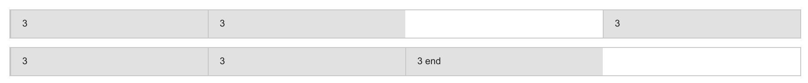
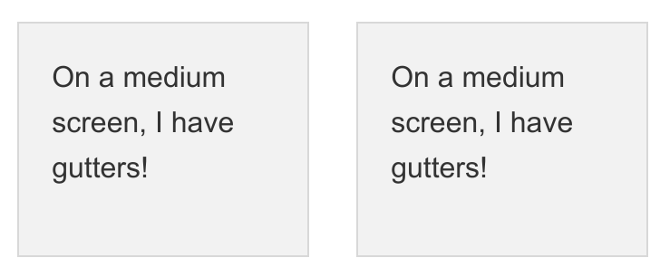
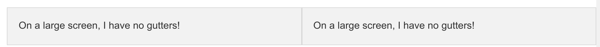

Table Of Contents
- Das 12 Spalten Layout
- 12 Spalten: Zurb Foundation
- Grid Basic
- Beispiele
- Zurb Advanced
- Zurb Components
Ein Grid muss her...
- Grids vereinfachen das Leben
- Ansatz: Tabellen
Tabellen BeispielLayout
<table>
<tr>
<td colspan="3">Header</td>
</tr>
<tr>
<td>
<table>
<tr>
<td> Spalte1.1</td>
<td>Spalte1.2</td>
</tr>
</table>
</td>
<td>Spalte2</td>
<td>Spalte3</td>
</tr>
</table>
Tabellen: Probleme
- Viele Probleme
- Code?
- Tablets?
- Smartphones?
- Tabellen zum Layouten?
12 Spalten to the rescue!
- CSS in "Tabellenform"
- Variationen: 12,16,24
- Column: Spalten des Grid
- Gutter: Padding zwischen den columns
Zurb Foundation - 12-Grid Elemente
- Row: .row
- Column: .column / .columns
- Column-size: .small-# , .medium-#, .large-#
Mobile First
Foundation is mobile-first. Code for small screens first, and larger devices will inherit
those styles.
Customize for larger screens as necessary.
Die großen müssen teilen...
Es hat sich etwas eingenistet..
Zurb Advanced Layouting
- Auffüllen von Spalten: small-offset-#
- Beenden von Reihen: column.end
- 
- Entfernen von guttern: row.collapse
- 
- Zentrieren von Columns: small-centered
- ...
Ende...
Eine Frage noch...
Nützliches:
https://sudheerdev.github.io/Foundation5CheatSheet/
http://foundation.zurb.com/docs/
/